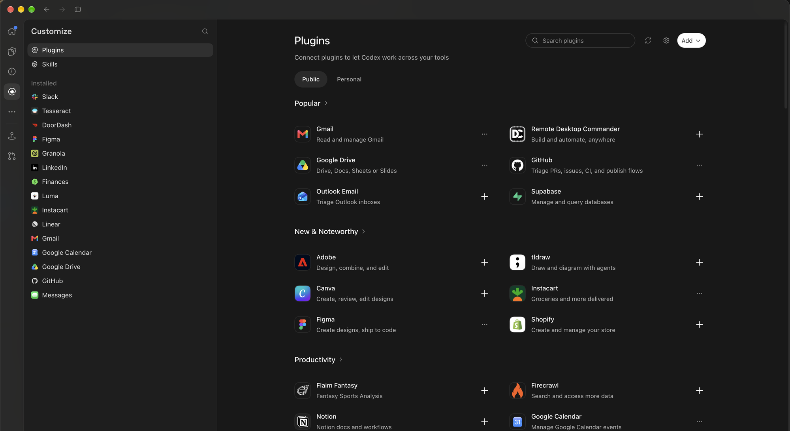

Every Codex plugin,
now inside Pi
A Pi extension that lets any Pi model use every plugin you have connected in Codex: Gmail, GitHub, Slack, Linear, Figma, Google Drive, Calendar and the rest. Connect once in Codex. Use it everywhere in Pi.
$ codex login $ pi install npm:@wileai/pi-codex-connector
{
"packages": ["npm:@wileai/pi-codex-connector"]
}
$ pi update npm:@wileai/pi-codex-connector
Requires Node.js 22.19+, Pi and the Codex CLI. Restart Pi after installing.
If it's connected in Codex, Pi can use it
This is the Plugins page in Codex. Every plugin you connect here becomes available to Pi through this extension. No second login, no extra OAuth apps, no MCP servers to run.

Any Codex plugin, from any Pi model. Install a plugin in Codex and its connector tools show up in Pi on the next discovery. Claude, Gemini, a local model: whichever model you run in Pi can search your Gmail, triage GitHub PRs or post to Slack through the plugins you already trust in Codex.
Codex keeps owning your login and every connector credential. Pi never sees a token. Pi gets the connector (app) tools of the plugins you connected; your local Codex MCP servers are left out.
Connect in Codex
Open Codex › Customize › Plugins and add the plugins you want. Sign in to each one there.
Install in Pi
Run codex login, then pi install npm:@wileai/pi-codex-connector and restart Pi.
Just ask
"Summarize my unread Gmail from today." Pi finds the right plugin tool, checks its schema and calls it.
Codex as a connector host, not a model
The extension talks to the local Codex app-server over stdio. It never starts a Codex model turn, so plugin calls cost no Codex tokens.
Pi
Any provider or local model you run in Pi.
Codex Connector
Three tools, consent and write approvals.
codex app-server
Ephemeral, model-free thread. Apps feature only.
Codex plugins
Gmail, GitHub, Slack, Linear, Figma…
- On first use, starts
codex app-server. Codex keeps owning your login and connector credentials. - Opens an ephemeral, model-free Codex thread with only the apps feature on. Your own Codex MCP servers stay off.
app/installedandmcpServerStatus/listbuild the catalog of your connected plugins and their tools.- Tools run through
mcpServer/tool/call. Results go straight back to your Pi model.
Three tools instead of hundreds
Connected plugins can expose hundreds of tool schemas. Loading them all would flood the context window, so the model gets three small tools and discovers the rest on demand.
| Tool | Purpose |
|---|---|
codex_connectors | List connected plugins. With connector or query, list the matching tools. |
codex_connector_schema | Full description and input schema of one tool. |
codex_connector_call | Run a tool with JSON arguments. |
/codex-connectors | Slash command that shows the catalog. Add refresh to rediscover after connecting a new plugin. |
› What did the team ship in GitHub this week? Post a summary to #eng in Slack. codex_connectors { "connector": "GitHub", "query": "pull requests" } GitHub · 4 matching tools codex_connector_schema { "tool": "github.search_prs" } codex_connector_call { "tool": "github.search_prs", "arguments": { … } } ✓ 12 merged pull requests codex_connector_call { "tool": "slack.send_message", "arguments": { … } } ? Allow write: Slack · slack.send_message [ yes / no ] ✓ Posted to #eng
Your data, your call
Connector names, schemas and results enter the selected Pi model's context, so the extension asks before it looks and asks again before it writes.
Session consent
Asks before discovering any plugin. Headless runs must set PI_CODEX_CONNECTORS_DATA=allow.
Write approvals
Tools not marked read-only open a confirm dialog in the TUI. Destructive tools always need approval.
Allowlist
Limit discovery and calls to named plugins, e.g. PI_CODEX_CONNECTORS_ALLOW=GitHub,Slack.
Credentials stay in Codex
Pi never reads tokens. Raw app-server diagnostics are withheld and never written to disk.
No silent retries
An aborted or timed-out write reports an unknown outcome and blocks further writes until you check.
Bounded results
Large results are truncated in memory, never saved. Narrow the query or paginate for more.
Configuration
| Variable | Values |
|---|---|
PI_CODEX_CONNECTORS_WRITES | ask (default): confirm in the TUI, deny without UI · allow: run without asking · deny: never run |
PI_CODEX_CONNECTORS_DATA | allow or deny plugin data access without the consent prompt |
PI_CODEX_CONNECTORS_ALLOW | Comma-separated plugin names or IDs. Empty exposes none; unset exposes all enabled ones. |
PI_CODEX_CONNECTORS_CODEX | Path to the Codex executable (default: codex on PATH) |